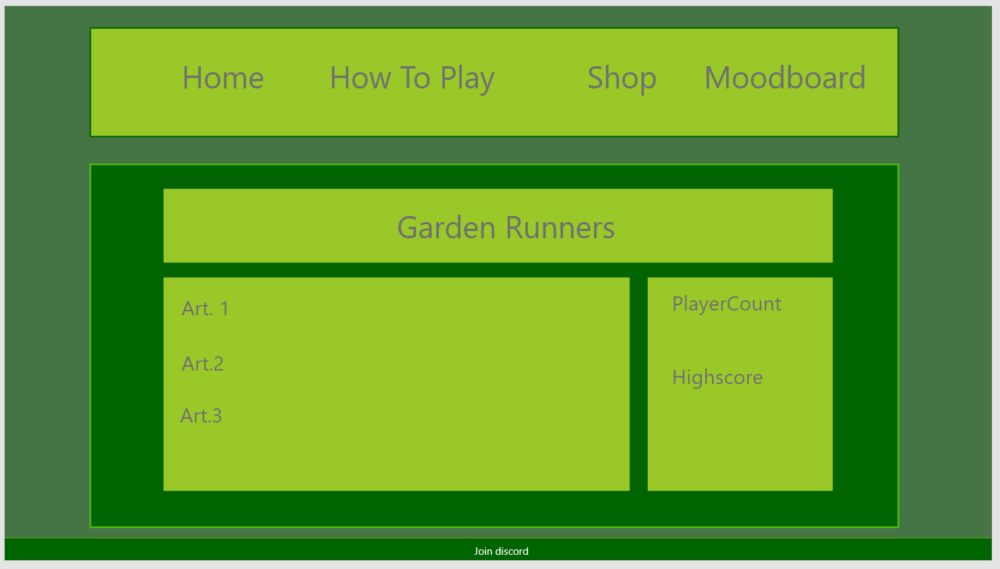

Kleuren
Ik heb gekozen om vooral groen te gebruiken in mijn website, dit heb ik gedaan omdat het doet denken aan gras en natuur dat je kan terugvinden in een tuin.
Font
Ik heb gekozen om het Lobsten font te gebruiken omdat ik persoonlijk vind dat dit een chille vibe uitstraalt die je laat terugdenken aan relaxen in je tuin.
JavaScript
Op mijn homepage heb ik javascript gebruikt om mensen te begroeten nadat ze hun naam hebben ingevuld door op de login button te drukken.
Daarnaast heb ik er ook voor gezorgd dat de playercount een willekeurig getal is elke keer dat je de pagina refreshed.
Op de "How to play" pagina heb ik een jQuery plugin gebruikt om een fade-in effect te creëren op de hele pagina.
Op de "Shop" pagina heb ik javascript gebruikt om het formulier te validaten en een bericht na te laten als het form is verstuurd.
Design
Omdat ik veel van idee verander heb ik alleen voor mijn homepage een basic design gemaakt.
